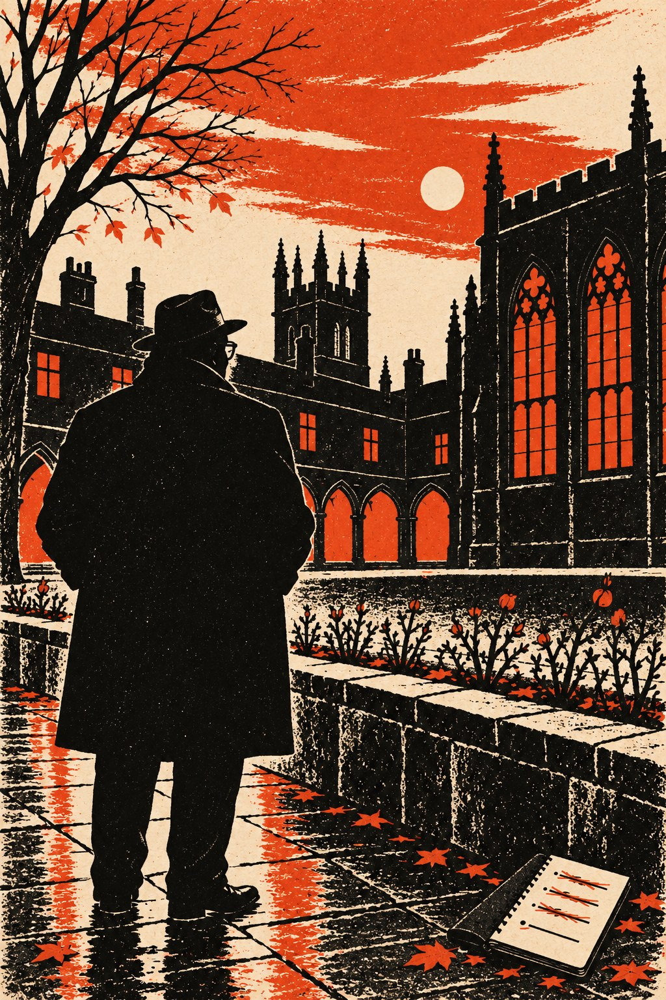

Смотрины

Не знает роза «почему»: цветёт, затем что цветёт,
Себя не замечает, не спросит, видят ли её.— Ангелус Силезиус, «Херувимский странник», кн. I
Глава первая
Миссис Крауч сдавала комнаты сорок лет и за сорок лет пришла к выводу, что жильца лучше всего узнаёшь по тому, чего он не делает.
Дом её стоял на Кранем-стрит, в Джерико, в том квартале, который Оксфорд строил в прошлом веке для наборщиков и переплётчиков университетской типографии и потом старался не замечать, как не замечают кухню, сидя в столовой. Улица была узкая, дома кирпичные, в два этажа, с одинаковыми дверями, выкрашенными в разные цвета, и из каждого окна было видно окно напротив. Покойный мистер Крауч тридцать один год простоял за наборной кассой в типографии на Уолтон-стрит, набирал греческие тексты, которых не понимал, и латинские, которые понимал немного, и умер, как говорила его вдова, от свинца и от вежливости: свинцовой пылью он дышал тридцать лет, а жаловаться считал невежливым. После него остались дом, пенсия, которой не хватало, и две комнаты наверху, которых хватало как раз на то, чтобы пенсия становилась сносной.
Комнаты она сдавала преподавателям, только не донам: донам полагались колледжи. Она сдавала их тем, кто ещё не стал доном или уже не станет: приезжим учёным, молодым лекторам без стипендии, священникам, которые писали диссертации, однажды даже немецкому профессору, который в тридцать восьмом году приехал на один триместр и остался до самой смерти. Жильцы приходили и уходили, а миссис Крауч оставалась, и знала о них больше, чем их жёны, если жёны были. Она узнавала их по книгам, которые они оставляли на столе, и по белью, которое отдавала прачке, и по тому, кто им писал и кому они не отвечали. Ничего дурного она в этом не видела. Доктор узнаёт людей по языку, сказала она однажды викарию, а хозяйка по наволочке, и неизвестно ещё, кто узнаёт больше.
Новый жилец появился в середине октября, в понедельник, в дождь. Его прислал декан одного колледжа, с которым она имела дело уже лет двадцать: декан написал, что мистер Смайли, литератор, проведёт в Оксфорде осенний триместр, работая над книгой, что человек он тихий и аккуратный и что за комнаты будет платить вперёд. Последнее декан подчеркнул, и миссис Крауч оценила это больше, чем всё остальное.
Мистер Смайли оказался невысоким, полным и немолодым, лет пятидесяти на её глаз. На самом деле он был моложе, но выглядел как человек, недавно вернувшийся из жарких стран и всё ещё мёрзнущий. Он был в толстом пальто не по росту, в очках с толстыми стёклами, которые то и дело снимал и протирал концом галстука, и в шляпе, с которой стекала вода. С собой он привёз два чемодана, один с одеждой, другой с книгами, и портативную пишущую машинку в футляре. Расплатился за месяц, поблагодарил, спросил, можно ли пользоваться ванной по вечерам, и ушёл наверх. Вниз в тот вечер он больше не спускался.
К концу второй недели миссис Крауч знала о нём следующее.
Он писал книгу о немецких поэтах. Это она знала наверняка, потому что книги из второго чемодана стояли теперь на полке над столом, и все они были немецкие, старые, в кожаных переплётах, с такими готическими буквами, что мистер Крауч, будь он жив, взял бы их в руки с почтением, как берут инструмент чужого цеха. Рядом лежала толстая тетрадь в коленкоровой обложке, и в тетради были выписки, переводы и пометки мелким аккуратным почерком.
Вот только книгу он не писал. Это она знала тоже наверняка. Тетрадь лежала раскрытой на одной и той же странице с того самого понедельника, когда он приехал, и на этой странице было одно и то же двустишие, по-немецки, и под ним три перевода, и все три зачёркнуты. Машинка стояла в футляре. Корзина под столом наполнялась одними газетами.
Уходил он каждый день, и всегда в разные стороны. Возвращался к ужину, иногда позже. Пару раз она видела его на Сент-Джайлс, у ворот колледжа, к которому он не имел никакого отношения, и однажды в чайной на Корнмаркет, за столиком у окна: он сидел над остывшим чаем и смотрел на улицу так, как смотрят люди, которые ждут кого-то и не надеются, что тот придёт. Он с ней не заговорил, и она с ним тоже. Миссис Крауч умела не узнавать жильцов на улице. Этому её научил немецкий профессор, который однажды объяснил ей, что в его стране человек, которого узнают на улице, может потом долго об этом жалеть.
Писем мистер Смайли не получал, кроме одного, в казённом конверте без обратного адреса, и ещё одного, надписанного размашистым женским почерком, с лондонским штемпелем. Казённое письмо он прочёл у двери и спрятал в карман. Женское он унёс наверх и, судя по тому, что потом нашлось в камине, читал долго, а потом сжёг. Миссис Крауч не стала разбирать пепел. У неё были правила, и не разбирать пепел было одним из них.
На камине у него, прислонённая к часам, стояла фотография. Миссис Крауч вытирала с неё пыль каждую пятницу и каждую пятницу смотрела на неё дольше, чем было нужно для пыли. На фотографии была женщина, молодая и очень красивая, той красотой, которую миссис Крауч видела только в журналах и у жён тех донов, которые женились поздно. Женщина смеялась, повернув голову, будто кто-то справа от фотографа сказал ей что-то смешное, и миссис Крауч всякий раз думала, что фотограф, наверное, был недоволен: смотреть она должна была в аппарат. Кто это, жилец не говорил. Письмо с размашистым почерком могло быть от неё, а могло и не быть. Если это была жена, то жена, которая за две недели написала мужу одно письмо, да и то такое, что его сожгли, была женой особого рода, и миссис Крауч таких жён жалела меньше, чем их мужей.
А по ночам он слушал радио.
Приёмник он купил на второй неделе, в лавке на Уолтон-стрит, небольшой, деревянный, и поставил у кровати. Стены в доме были тонкие, и миссис Крауч, которая спала плохо уже лет десять, слышала его. Музыки он не слушал. Мистер Смайли слушал новости, все выпуски подряд, сначала Би-би-си, а потом, ближе к полуночи, что-то далёкое, на чужих языках, с треском и свистом. После двадцать четвёртого числа, когда в газетах написали, что в Будапеште стреляют, радио наверху не замолкало до двух, а однажды до четырёх. Миссис Крауч лежала в темноте и слушала, как за стеной чужой голос с трудом пробивается сквозь помехи, и чувствовала себя так, словно подслушивает чужую исповедь.
В воскресенье, двадцать восьмого, она поднялась к нему с чаем, хотя чай в комнаты не входил в условия. Он сидел у стола в халате, с выключенным приёмником, и смотрел в раскрытую тетрадь, а на столе лежали все газеты, какие в то утро продавались на Уолтон-стрит. Он поблагодарил за чай, и миссис Крауч, которая никогда не спрашивала жильцов о том, о чём они не рассказывали сами, вдруг спросила, нет ли у него в Венгрии родных.
Он посмотрел на неё поверх очков так, будто ждал от неё любого другого вопроса.
— Нет, — сказал он. — Родных нет. Знакомые, пожалуй, были. Давно.
И добавил, помолчав, что это очень любезно с её стороны.
Спускаясь по лестнице с пустым подносом, миссис Крауч подумала, что жилец её человек одинокий, и одиночество у него того рода, какое бывает у людей женатых, и что книгу о немецких поэтах он, может быть, и напишет, но не в этом триместре. Ещё она подумала, что ни разу за две недели не видела, чтобы он смеялся, и ни разу не видела, чтобы он скучал, и что такое сочетание встречается редко.
Вывод она сделала тот же, что делала всегда, когда жилец оказывался непонятным: решила не спешить. За сорок лет она узнала, что непонятные жильцы в конце концов объясняют себя сами, обычно в последний день, когда собирают чемоданы, и обычно тем, что оставляют.
В этом она не ошиблась. Ошиблась она только в том, что именно мистер Смайли оставит.
Глава вторая
До Джерико и до миссис Крауч был Лондон, и в Лондоне был сентябрь, сухой и пыльный, каким он бывает в те годы, когда лето не знает, как уйти.
Смайли вернулся из Дели давно и всё ещё не вернулся. Так сказала однажды за завтраком Энн, и сказала без упрёка, как говорят о погоде. Она была права, и Смайли это знал. В Дели он провёл сутки напротив человека, который за эти сутки не сказал ни одного слова. Смайли говорил за обоих. Он уговаривал, доказывал, обещал лондонский домик и сад, говорил о жене того человека и, сам не заметив как, о своей, и потом долго слушал в памяти собственный голос, как слушают запись на плёнке, сделанную без их ведома. Тот человек улетел домой, в Москву, и увёз с собой зажигалку Смайли, золотую, с гравировкой, подарок Энн. Смайли сказал жене, что потерял её в самолёте. Энн купила ему другую, попроще, и гравировки на ней не было.
Контроль об этом не знал, а если знал, то не подавал виду. В сентябре он вызвал Смайли наверх, в свой холодный кабинет на пятом этаже, где камин не топили ни в сентябре, ни в январе, подвинул к нему по столу лист бумаги и спросил, помнит ли он Оксфорд.
Смайли сказал, что помнит.
— А Оксфорд вас? — спросил Контроль. — Надеюсь, что нет. Нам нужен человек, которого там не помнят.
На листе были имена, десять или одиннадцать, и против каждого колледж, курс и предмет. Внизу стояли инициалы тех, кто эти имена прислал. В каждом университете страны у Цирка были друзья, несколько преподавателей, воевавших в разведке или просто любивших свою страну старомодно и без рассуждений, и раз в год эти люди писали в Лондон, что у них есть мальчик, на которого стоит посмотреть. Так когда-то старик Джебеди написал в Лондон про Смайли. С тех пор прошло больше двадцати лет, Джебеди давно лежал в земле, а система жила и даже обзавелась собственным словечком: в Цирке таких преподавателей называли наводчиками, а то, что предстояло Смайли, смотринами.
Оксфордских наводчиков в тот год было пятеро. Смайли знал двоих по войне и одного по клубу. Оставались старый классик из Лонсдейла по фамилии Пенхаллоу, который называл Цирку одного-двух студентов за десять лет и ни разу не ошибся, и доктор Эдвард Верити, историк из Брейкспир-колледжа, автор книги о Габсбургах, которую читали даже те, кто не читал ничего о Габсбургах. Всю войну Верити просидел в разведуправлении Военного министерства над картами Центральной Европы, и те, кто сидел с ним рядом, говорили, что он знал дороги Венгрии лучше венгерского генерального штаба. От Верити в списке было три имени. От Пенхаллоу не было ни одного.
— Он пишет, что в этом году у него одни болваны и один первокурсник, которого он ещё не видел, — сказал Контроль. — Греческий старика интересует больше наших дел. По-моему, здравая позиция.
Задание было простое, и Контроль изложил его в трёх фразах. Смайли проведёт триместр в Оксфорде под своим именем, с правдоподобной книгой и с неправдоподобным терпением. Он посмотрит на всех из списка и не заговорит ни с одним, а потом напишет, кого из них стоит звать в Лондон на разговор, а кого лучше оставить в покое.
— Билл Хейдон вызывался поехать сам, — сказал Контроль и потёр ладони, как потирал их всегда, зимой и летом. — Но Билл их очарует, а они очаруют его, и мы получим одиннадцать маленьких Хейдонов. Одного мне достаточно. А вас, Джордж, никто не заметит. Это комплимент.
Смайли сказал, что так и понял.
Уже у двери Контроль добавил, не поднимая глаз от бумаг, что триместр в Оксфорде пойдёт Смайли на пользу. После Дели полезно посмотреть на людей, которые ещё ничего не сделали. Смайли так и не понял, что это было: забота, приговор или неосторожность. С Контролем обычно бывало и то и другое, а неосторожности не бывало никогда.
⁂
Дома, на Байуотер-стрит, Энн выслушала новость про Оксфорд, сидя с ногами в кресле, и сказала, что это чудесно: наконец-то он напишет свою книгу о немцах, а она наконец-то выспится. Потом посмотрела на него тем длинным внимательным взглядом, который он любил и которого боялся, и спросила, сколько там будет мальчиков.
— Одиннадцать, — сказал Смайли, прежде чем успел подумать.
— Бедные, — сказала Энн. — Ты возьмёшь мою фотографию, чтобы там думали, что ты кому-то нужен. Иначе тебя женят на какой-нибудь вдове профессора.
Она сама вынула снимок из рамки в спальне и сунула ему в чемодан, между рубашками, и смеялась при этом. Фотографию сделали три года назад на чьей-то свадьбе в Гэмпшире. Смайли помнил, кто стоял тогда справа от фотографа и что именно он сказал. Вслух он никогда об этом не вспоминал.
⁂
Список он выучил наизусть за два вечера и вернул в Регистратуру, как полагалось. В чёрном блокноте, который он носил в кармане пиджака, он записал из него только инициалы, столбиком, как записывают долги в карточной игре. Третьим сверху стояло «М. Х.». Марк Хэлифакс, Брейкспир, третий курс, современная история. Назвал его Верити. Против фамилии в списке была приписка его рукой, сделанная для Лондона: «Лучший мой ученик за много лет. Венгерский от матери. Сдержанный».
Слово «сдержанный» Смайли тогда прочёл как похвалу.
Глава третья
Смотрины идут медленно, и в этом их единственная прелесть. Человека нельзя рассмотреть за один раз, как нельзя прочесть книгу, глядя в неё из окна проезжающего автобуса, и Смайли смотрел на своих одиннадцать так, как он делал всё, не торопясь и со стороны. Он сидел в читальном зале Радклиффа за соседним столом, стоял в задних рядах на открытых лекциях, читал студенческие газеты и пил чай в тех чайных, где студенты пили чай. Расспрашивать он не расспрашивал. В Оксфорде о человеке и так расскажут всё, стоит посидеть поблизости молча, а если спросишь, самое важное припрячут в карман.
За первые две недели от одиннадцати осталось трое. Гребец из Крайст-Черч оказался великолепным молодым человеком, совершенно не способным хранить что-либо, даже весло. Философ из Баллиола был умнее всех в комнате и требовал, чтобы комната это замечала. Двое студентов Верити выглядели добросовестными и скучными настолько, что Смайли даже подумал, не прислал ли их Верити для счёта, и сам себе удивился: мысль была недобрая и ни на чём не основанная. Остальных он вычеркнул за мелкие грехи, каких в Цирке не прощают: одного за любовь к себе, другого за долги, третьего за слишком громкий смех в пабе «Орёл и дитя» в тот самый вечер, когда его сосед по столику рассказывал о смерти отца.
В конце октября из Лондона пришёл казённый конверт без обратного адреса, тот самый, который Смайли прочёл у двери миссис Крауч. В нём была копия карточки, написанной старомодным наклонным почерком. Пенхаллоу всё-таки прислал одно имя: «Э. Морс. Лонсдейл, первый курс, «Великие». Судить рано. По конкурсным работам: переводит точнее, чем нужно, и замечает, чего в тексте нет. Если будете в часовне, он поёт в тенорах». Имени не было, одна буква. Смайли дописал в чёрный блокнот двенадцатую строчку, «Э. М.», и, против всех правил, через Лондон передал Пенхаллоу свой адрес на Кранем-стрит: первокурсника иначе было не увидеть, а старик, судя по почерку, был не из болтливых. Других наводчиков он об этом не извещал.
А на первом месте в блокноте к тому времени стоял Хэлифакс.
Настоящие кандидаты обычно разочаровывают с первого взгляда, и Хэлифакс разочаровал. Он был среднего роста, светловолосый, в старом коричневом свитере с заштопанным локтем, и в читальном зале сидел так, как сидят люди, которым не важно, смотрят на них или нет. В чайной на Корнмаркет Смайли дважды слышал, как он спорит с друзьями, и оба раза Хэлифакс проигрывал спор с такой лёгкостью, что победители потом долго не знали, что с победой делать. На лекции Верити о сараевском выстреле он сидел в первом ряду и ничего не записывал, и Смайли сначала принял это за высокомерие, а потом понял, что Хэлифакс слышит эту лекцию не в первый раз и пришёл из вежливости к учителю. Верити читал прекрасно, с ленивым блеском, и дважды по ходу лекции посмотрел в первый ряд так, как смотрит актёр на единственного зрителя, чьё мнение ему интересно.
Из студенческих газет и чужих разговоров Смайли собрал остальное. Отец Хэлифакса был инженером-мостостроителем, до войны строил на Дунае и привёз из Будапешта жену. Мальчик до десяти лет говорил дома по-венгерски, в школе выучил немецкий и французский, служил в разведке Рейнской армии переводчиком и вернулся оттуда неразговорчивым. Мать умерла в сорок восьмом. В Будапеште у него оставались двоюродные братья, один из них врач, и в прошлом году Хэлифакс ездил к ним на летние каникулы, что для англичанина в те годы было непросто и потребовало терпения, знакомств и нескольких месяцев ожидания визы.
Это последнее обстоятельство Смайли записал отдельно, не зная ещё, зачем.
⁂
Во вторник, двадцать третьего октября, в Будапеште студенты вышли на улицы, а к ночи в городе стреляли. Оксфорд узнал об этом наутро, из газет, и к вечеру четверга на досках объявлений в десятке колледжей висели листки, написанные одной рукой: комитет помощи венгерским студентам, сегодня в восемь, Брейкспир, лестница три, комнаты М. Хэлифакса.
Смайли пришёл, нарушив единственное условие Контроля. Риск был небольшой: в комнату набилось человек сорок, студенты, два священника, пожилая дама из Сомервилла с вязаньем и трое венгров из тех, кто уехал из страны ещё при Хорти, и на полного немолодого человека у двери никто не обратил внимания. В камине горел уголь, на столе лежала карта Венгрии, прижатая по углам чашками, и Смайли, глядя на неё издалека, подумал, что карта военная, старая, и что ей скорее всего не меньше лет, чем хозяину комнат.
Хэлифакс говорил недолго и негромко. Он не сказал ни слова о свободе, о России и о совести Запада, хотя в комнате ждали именно этого. Он сказал, что в Будапеште будут раненые и что раненым нужны бинты, пенициллин и плазма. Что Красный Крест собирает помощь в Вене. Что у одного из присутствующих есть фургон, а у другого дядя в аптечной фирме в Бирмингеме. Что деньги нужны к субботе и что счёт он будет вести сам, в этой тетради, и поднял над головой тетрадь, самую обыкновенную, в синей обложке, пока пустую.
Дама из Сомервилла первой положила на стол фунт. Смайли положил два, возле двери, когда все уже расходились, и Хэлифакс поблагодарил его, даже не взглянув на бумажки, и спросил, как записать. Смайли сказал, что никак, анонимно. Хэлифакс кивнул и записал: «Друг, 2 ф. 0 ш. 0 п.»
Уже на лестнице Смайли слышал, как кто-то из студентов за его спиной сказал, что надо было всё-таки сказать пару слов про Россию, а Хэлифакс ответил, что про Россию в комнате и так все знают, а про плазму нет.
На улице было холодно и тихо. Смайли шёл домой в Джерико и думал, что за двадцать лет видел много молодых людей, готовых умереть за Венгрию, Испанию или Польшу, и очень мало таких, кто сначала спросит, сколько там нужно бинтов. В чёрном блокноте против «М. Х.» появилась маленькая аккуратная галочка. Она была первой галочкой в блокноте и, как оказалось, последней.
Глава четвёртая
Тем, кто забыл осень пятьдесят шестого года, стоит напомнить, что в последний день октября английские самолёты начали бомбить Египет. Правительство мистера Идена объяснило это желанием разнять Израиль и Египет, которые дрались у Суэцкого канала, и полстраны в это поверило, а другая половина не поверила и заявила об этом так громко, как Англия не заявляла ни о чём с самой войны. В те же дни в Будапеште венгры ждали, что сделают русские, и тот, кто читал обе полосы газеты сразу, понимал, что русским нельзя было сделать подарка лучше.
Смайли читал обе полосы сразу. Делиться этим ему было не с кем.
В четверг, первого ноября, студенты вышли на Хай-стрит. Смайли знал об этом, как знал весь город, и пришёл загодя, потому что толпа на улице собирает людей лучше любой переписи: в толпе видно, кто идёт впереди, кто сзади, кто стоит на тротуаре с руками в карманах и кто уходит за минуту до того, как случится самое интересное. Он встал в дверях маленькой букинистической лавки напротив церкви Святой Девы Марии, с книжкой в руках, как стоят покупатели, которые вышли взглянуть, что за шум, и забыли вернуться. Хозяин лавки, старик в сатиновых нарукавниках, стоял рядом и говорил, что в тридцать шестом году тут так же шли против Мосли, и пели те же песни, и что из тех мальчиков половина потом не вернулась с войны.
Хэлифакса Смайли увидел сразу, по коричневому свитеру под мантией. Тот шёл в середине колонны с двумя друзьями из своего комитета и не кричал. Плаката у него тоже не было. Он шёл, как идут на похоронах за гробом человека, которого не знали лично, из уважения к семье.
Навстречу колонне, от Карфакса, шли другие, румяные, в твиде, и пели «Правь, Британия», и пели плохо. Смайли, который в своё время слышал под окнами другие песни, про знамёна и сомкнутые ряды, не стал бы утверждать, что немцы пели лучше. Но немцы хотя бы попадали в ноты.
Две колонны сошлись там, где должны были сойтись, среди улицы, и дальше всё произошло так быстро, что потом никто из видевших не мог рассказать по порядку. Смайли мог, потому что смотрел не туда, куда смотрели все. В первом ряду тех, кто кричал против войны, шёл тёмный жилистый парень с валлийским выговором, который кричал так, как кричат люди, которые там побывали, а навстречу ему шёл рослый белокурый молодой человек с армейскими усиками и пел громче всех. Они сказали друг другу по одной фразе. Смайли расслышал только вторую: «А такие, как ты, там и остаются», и подумал, что после такой фразы остаётся только ударить, и валлиец ударил.
А Хэлифакс в эту секунду взял своих двоих друзей под локти и мягко, но без колебаний повёл их прочь, наискосок, сквозь толпу, к тротуару и в переулок у церкви. Один из друзей обернулся и что-то сказал, и Хэлифакс ответил коротко. Смайли стоял достаточно близко, чтобы расслышать:
— Это не наша драка. Нам нужны чистые руки в субботу.
В субботу комитет собирался грузить фургон. Фраза была разумная, и Смайли тогда оценил её именно так. Лишь позже, перебирая этот день, как перебирают карточки в каталоге, он подумал, что в его годы так не говорят. В его годы либо лезут в драку, либо стыдятся того, что не полезли. Хэлифакс не стыдился.
Тем временем вокруг дерущихся образовался круг, и в круге произошло то, чего никто не ждал. Из толпы зрителей шагнул вперёд худой вихрастый первокурсник в длинной мантии, неловкой и новой, какие носят стипендиаты, и встал между валлийцем и усатым, держа перед собой стопку книг, как держат щит. Он ничего не кричал и никого не уговаривал. Он просто там встал, и на лице у него было написано такое изумление от собственного поступка, что Смайли чуть не улыбнулся. Книги разлетелись по мостовой. Чей-то локоть угодил мальчику в скулу, и он сел на мостовую среди своих книг и первым делом, ещё не поднимаясь, протянул руку к книге, лежавшей в луже раскрытой, страницами вниз, и вытер её рукавом.
Потом появились бульдоги, университетские сторожа в котелках, которые в Оксфорде следят за порядком среди студентов вместо полиции, и один из них вежливо спросил у всех троих имя и колледж. Смайли из своих дверей расслышал из ответа первокурсника только одно слово, и слово было «Лонсдейл». Мальчик собрал книги, прижал их к груди и пошёл прочь, придерживая свободной рукой скулу, и не оглянулся ни на тех, кого разнимал, ни на тех, кто ему аплодировал. Аплодировали двое, и одним из них был старик в нарукавниках.
Смайли вернул старику книжку, извинился, что задержал её так долго, и пошёл к Карфаксу. Дорогой он поймал себя на том, что перебирает в памяти не Хэлифакса, с его чистыми руками, а тот жест, когда мальчик с разбитой скулой первым делом вытирал книгу. И сердито сказал себе, что к делу это не относится.
Глава пятая
В воскресенье, четвёртого ноября, русские танки вернулись в Будапешт. Миссис Крауч почувствовала неладное раньше всех на Кранем-стрит, потому что в седьмом часу утра радио наверху вдруг замолчало, и эта тишина разбудила её вернее любого шума. Она лежала и слушала, как жилец ходит по комнате, три шага туда и три обратно, потом садится, потом снова встаёт. В восемь он спустился к завтраку выбритым, в галстуке, съел всё, что было на тарелке, и сказал, что сегодня проведёт день в библиотеке. Миссис Крауч напомнила ему, что сегодня воскресенье. Он поблагодарил и сказал, что в таком случае погуляет.
Гулял он долго, вдоль канала, мимо чёрных барж и лодочных сараев, до самого Волверкота и обратно, и всю дорогу думал не о Венгрии. О Венгрии думать было бесполезно. Он знал, что произойдёт дальше, не хуже людей на пятом этаже, которые все эти дни сидели до утра и тоже ничего не могли поделать. Он думал о Хэлифаксе, который в это утро, надо полагать, пересчитывал ящики с пенициллином, и о его двоюродном брате-враче. И о фразе про чистые руки, которая сидела в нём третий день, как заноза.
В понедельник фургон комитета, старый зелёный «бедфорд» с надписью мелом на борту, ушёл в Дувр. За рулём сидел Хэлифакс. Первая машина из Оксфорда ушла в Будапешт ещё в конце октября, в дни перемирия, а фургон комитета был вторым и дальше австрийской границы пройти уже не мог. Оттуда его путь лежал через Бельгию и Германию в Вену, а из Вены к венгерской границе, к деревням на краю болота, куда по ночам уже выходили беженцы. Для Смайли это означало две недели, в которые кандидат будет недоступен для наблюдения и доступен для изучения, и он последовал совету, который когда-то давал новичкам сам: если человека нельзя видеть, читай то, что он написал, когда никто не просил его писать.
Хэлифакс писал. В библиотеке Брейкспира, куда Смайли пустили по записке декана, друга его мифической книги, хранились подшивки колледжского журнала за последние десять лет, а в читальном зале Бодлеана выдавали студенческие газеты, и старый служитель принёс их Смайли с таким видом, словно ему впервые за тридцать лет заказали что-то неприличное.
Смайли читал три дня. Хэлифакс начал печататься на первом курсе, осенью пятьдесят четвёртого, и писал хорошо. У него был очерк о мостах через Дунай, взорванных немцами в сорок пятом, и о том, кто и для кого их теперь строит. У него была рецензия на книгу об испанской войне, злая и точная. У него была статья против водородной бомбы, под которой Смайли, будь он вдвое моложе, пожалуй, подписался бы сам, и длинное письмо в редакцию о том, что Англия продала Венгрию в сорок четвёртом году за проценты на клочке бумаги. Это были тексты молодого человека, у которого есть убеждения и который их не стесняется. Убеждения были не особенно левые и не особенно правые. Они были сердитые.
Потом, в январе пятьдесят шестого, сердитость исчезла.
Хэлифакс продолжал писать, и писал даже лучше, чем прежде. Но теперь это были рецензии на концерты, заметка о гребных гонках, длинное и очень смешное эссе о колледжских скаутах и статья о венском конгрессе тысяча восемьсот пятнадцатого года, в которой не нашлось бы ни одной фразы, с которой мог бы не согласиться сам Меттерних. Из списков клубов и обществ, которые колледжский журнал исправно печатал каждый триместр, его имя исчезло в тот же самый триместр из двух мест сразу: из клуба лейбористов и из дискуссионного кружка при церкви Святой Девы Марии. Из первого уходят, когда разочаровались в лейбористах, из второго, когда разочаровались в Боге. Из обоих сразу уходят, как правило, по чьему-то совету: не высовываться.
Смайли долго сидел над этими подшивками, сняв очки, и протирал их галстуком так долго, что студентка за соседним столом начала на него поглядывать. Такие исчезновения он уже видел. Вся его служба прошла среди людей его поколения, которые в молодости громко читали Маркса, а потом в один прекрасный триместр замолкали, стриглись и поступали на дипломатическую службу. Двое из них пять лет назад сели на пароход во Францию и нашлись в Москве, и с тех пор в Цирке было не принято говорить об этом вслух, а в клубах говорили только об этом. Но те замолкали в тридцатых, и сами, из страсти к тайне, которая в те годы была модой. Хэлифакс не походил на человека, который молчит из страсти. Он был похож на человека, который слушается совета.
Оставалось узнать, чьего.
⁂
Узнать оказалось нетрудно, и лёгкость эта Смайли не понравилась. В Брейкспире был скаут по имени Хартли, служивший на лестнице доктора Верити, и Хартли по вечерам пил пиво в том же пабе в Джерико, что и муж подруги миссис Крауч, Уилф Берроуз из Лонсдейла. Смайли дважды заходил туда с газетой, садился в угол и слушал. Скауты говорили о своих джентльменах так, как говорят конюхи о лошадях: нежно, снисходительно и с точностью, которой позавидовал бы любой офицер наружного наблюдения. Из этих разговоров Смайли узнал, что доктор Верити по субботам даёт чай и на чай зовёт не всех. Что мистер Хэлифакс первые два года на этих чаях не бывал ни разу, а с прошлого Рождества не пропускает ни одного, и уходит последним. И что доктор Верити после этих чаев всегда сам моет чашки, не дожидаясь Хартли, что Хартли считал личным оскорблением.
Молодой человек перестаёт писать сердито и начинает пить чай у своего тьютора. В этом не было бы ничего, сказал себе Смайли по дороге домой, кроме того, что молодые люди взрослеют. В этом не было бы ничего, добавил он, сворачивая на Кранем-стрит, если бы тьютор сам не вписал имя этого молодого человека в список, посланный в Цирк.
В чёрном блокноте в тот вечер ничего не прибавилось. Смайли считал, что теории не записывают, пока они не перестали быть теориями, иначе записанная теория начинает искать подтверждений сама и находит их всегда.
Глава шестая
О смерти в Лонсдейле Смайли прочёл в местной вечерней газете, которую миссис Крауч оставляла на столе в прихожей. Студент второго курса, бывший офицер, в ночь Гая Фокса, когда вся Англия жжёт костры и пускает ракеты, упал с крыши колледжа во двор и разбился. В пятницу было дознание коронера, и газета уделила ему три строчки на третьей полосе, ниже сообщения о ценах на уголь. Фамилия погибшего Смайли ничего не сказала. Но рядом была фотография из колледжского альбома, и с неё смотрел тот рослый усатый, который на Хай-стрит пел «Правь, Британия», а колледж был тот самый, который первокурсник с разбитой скулой назвал бульдогу. Больше ничего он об этом не думал, потому что думать было не его делом. Для этого в городе была полиция.
Но когда в пятницу пришла записка от Пенхаллоу, написанная тем же наклонным почерком, с приглашением на службу в Воскресенье памяти, Смайли поймал себя на том, что читает её дважды. В записке не было ничего, кроме часа службы и одной фразы в конце: «Вы просили сообщать, если что-то переменится. Переменится, вероятно, на днях».
⁂
В пятьдесят шестом году Воскресенье памяти пришлось на одиннадцатое ноября, на самую дату перемирия тысяча девятьсот восемнадцатого года, и для памяти это было слишком точно. В часовне Лонсдейла было холодно, как бывает холодно только в старом камне, и пахло воском, мокрыми пальто и бумажными маками, которые старик-привратник продавал у входа за сколько не жалко. На стене слева от алтаря висела таблица с именами членов колледжа, погибших на двух войнах, и под ней лежал венок. Имён первой войны было вдвое больше, и буквы у них были тоньше, словно тогда ещё надеялись, что продолжение не понадобится.
Смайли сел в последнем ряду, среди гостей. Пенхаллоу он узнал сразу, хотя видел его впервые: тот сидел среди донов, маленький, сухой и седой, и пальцы его на подлокотнике скамьи что-то отбивали, пока не заиграл орган, а когда заиграл, замерли. Лицо у него было серое и невыспавшееся. Смайли знал такие лица по войне. Так выглядят люди, которые знают что-то тяжёлое и ждут, когда другой человек скажет это вслух сам.
Хор стоял в два ряда лицом друг к другу, как стоят в колледжских часовнях, и Смайли видел тех, кто стоял на дальней стороне, в профиль. Мальчика с Хай-стрит он узнал по синяку, прежде чем по лицу. Синяк уже пожелтел по краям. Мальчик стоял в тенорах, третьим с краю, и смотрел в ноты с таким сосредоточением, какое бывает у людей, которые смотрят в ноты, чтобы не смотреть ни на кого другого. А рядом с ним, в басах, одно место пустовало, и молодой регент с искусанными ногтями дважды взглянул на него, прежде чем поднять руку.
«Замечает, чего в тексте нет. Если будете в часовне, он поёт в тенорах». Смайли так и не узнал, как называется чувство, которое он испытал, сложив эти два обстоятельства. Ближе всего оно было к радости коллекционера, у которого два непарных тома вдруг оказались из одного издания.
Служба шла своим чередом. Пели «Боже, наша помощь в веках минувших», и старые доны пели громче студентов, потому что помнили слова без книги. В одиннадцать часов все встали и две минуты молчали. За эти две минуты Смайли успел вспомнить Джебеди, и ещё троих, чьих имён не было ни на одной таблице в Англии и не будет, потому что они были немцами и работали на него. Потом трубач из университетского учебного корпуса сыграл «Последний пост», сфальшивив на верхней ноте, и никто не улыбнулся.
В конце хор пел старинное английское песнопение на слова псалма, для одного хора, без прихожан, и в нём было место, где тенора вступают одни, без органа. Мальчик с синяком вступил чисто и точно, и голос у него оказался неожиданно тёплым для такого худого и насупленного лица. Смайли, который в музыке разбирался мало, а в людях много, подумал, что так поёт человек, у которого на душе что-то лежит, и что пение ему этого чего-то не снимает, зато позволяет нести его четыре такта не в одиночку.
⁂
Пенхаллоу нагнал его у дверей часовни, в толкотне, и взял за локоть, как берут старого знакомого. Говорил он с лёгким корнуолльским выговором, быстро и тихо.
— Смайли? Я так и думал, что это вы, вы единственный не пели. Простите меня. Я звал вас на херес после службы, а хереса не будет. У нас в колледже несчастье, вы, вероятно, читали, и сегодня оно, кажется, доскажет последнюю главу. Меня ждут.
Смайли сказал, что понимает. Он не спросил, кто ждёт, и Пенхаллоу, кажется, заметил это и оценил.
— В понедельник или во вторник, — сказал Пенхаллоу. — Приходите вечером, лестница четыре, второй этаж. У меня есть портвейн, которого доны не заслуживают. И не зачёркивайте никого из моих, пока мы не поговорим. Хотя моих, как вы знаете, в этом году один.
Он отпустил локоть Смайли и быстро пошёл через двор, придерживая на ветру мантию, и Смайли видел, как он скрылся в дверях лестницы номер четыре. Через минуту в те же двери прошёл худой мальчик в длинной мантии, уже без стихаря, но с нотами под мышкой, и не оглянулся.
Смайли купил у старика-привратника второй мак, хотя первый уже был у него в петлице, и пошёл домой в Джерико пешком, и всю дорогу ему было тревожно за человека, имени которого он не знал.
Глава седьмая
Приглашение от Верити пришло раньше, чем Смайли решил, как сам напросится к нему в гости, и это было первое, что Смайли отметил. Карточка была печатная, с гербом Брейкспира, и на обороте стояло чернилами, размашисто и весело: «Милый Смайли, если уж вы после индийской жары зимуете в нашем болоте, приходите хотя бы поужинать. Лондон мог бы меня и предупредить. Э. В.»
Лондон никого не предупреждал. Наводчики не должны были знать, кто и когда приедет смотреть их кандидатов, и Контроль держался этого правила с тем же упорством, с каким держался холодного камина. Значит, Верити узнал сам. Адрес на Кранем-стрит Смайли оставил одному Пенхаллоу, а про Индию в Оксфорде не знал никто. От декана, от скаута, от кого-то из старых знакомых по войне, которые сидели теперь в цирковых кабинетах и любили посплетничать за обедом в клубе. В Оксфорде все всё узнают, сказал себе Смайли. Но сам себе он в этот раз не поверил.
Ужин за высоким столом в Брейкспире был таким же, каким и должен быть ужин за высоким столом. Доны сидели на помосте под портретами своих предшественников, студенты внизу, за длинными столами, и суп был тёплым только у того конца стола, который ближе к кухне. Верити оказался крупным красивым человеком лет пятидесяти, с густой седой шевелюрой и тем румянцем, который в Англии выдаёт либо охотника, либо любителя бордо. Он был любителем бордо. Со Смайли он держался как со старым товарищем, хотя они виделись всего раз в жизни, в сорок четвёртом, на каком-то совещании, где делили дороги Центральной Европы, и Смайли тогда не сказал ни слова. За столом Верити представил его соседям как знатока немецкого барокко, и соседи сразу потеряли к нему интерес, что и требовалось.
После ужина Верити повёл его к себе.
Комнаты у него были тёплые, в камине горели дрова, а не уголь, и на стенах висели карты, старинные, в рамках: Венгерское королевство, Богемия, Трансильвания. Верити разлил портвейн, сел напротив, вытянул ноги к огню и сказал, что теперь, когда коллеги разошлись, можно наконец поговорить о чём-нибудь серьёзном, например о Венгрии.
Говорил он прекрасно. Он знал имена всех будапештских министров за последние тридцать лет и половину их любовниц. Он объяснил, почему венгры проиграли, так, словно объяснял давно известную историческую битву студентам: они поверили американскому радио, а радио ничего не обещает, оно только говорит. Он сказал, что Суэц и Будапешт — одна и та же неделя, и что историки будущего не поверят, что такое совпадение было случайным, и будут неправы. Он спросил, как поживает Билл Хейдон, который за два года до войны слушал у него лекции о Габсбургах и рисовал на полях тетради карикатуры на всех эрцгерцогов подряд, и Смайли сказал, что Билл поживает прекрасно, как всегда.
И только когда вторая рюмка портвейна была наполовину пуста, Верити заговорил о Хэлифаксе.
— Вы ведь на него смотрели, — сказал он, и это не был вопрос. — Конечно, смотрели. Я сам вписал его первым из своих трёх. И теперь, если позволите, дам вам совет, который мне самому неприятен. Не берите его.
Смайли спросил, почему.
— Потому что весной я вписал одного человека, а теперь у меня другой. Венгрия сделала из него венгра, — Верити повертел рюмку против огня. — Вы знаете, где он сейчас? В Австрии, на границе, с фургоном пенициллина. Прекрасно и благородно. А через год он захочет везти туда винтовки. Он горяч, Смайли. Он слишком много чувствует. Вашему цеху нужны холодные головы, а я вам подсунул горячую. Простите старика.
Смайли поблагодарил за откровенность. Он сказал, что его мнение ничего не решает, что он лишь смотрит и пишет, а решают другие, и что совет доктора Верити, разумеется, войдёт в отчёт. Верити кивнул так, словно другого ответа и не ждал, и заговорил о бордо.
Но Смайли уже не слушал про бордо. Он думал о том, что наводчик, который сам вписал кандидата первым, а потом сам же отговаривает, делает кандидату лучшую рекомендацию, какую только можно сделать. После такого совета в отчёте кандидат выглядит ненатасканным, ничьим, а Цирк больше всего на свете любит ничьих. И ещё он думал о том, что Хэлифакс, описанный Верити, горячий, чувствительный, готовый везти винтовки, существовал до января пятьдесят шестого года и с тех пор не показывался никому. А Хэлифакс, которого видел сам Смайли, на Хай-стрит увёл друзей от драки и сказал про чистые руки. Верити описывал ему человека, которого сам же и заставил замолчать. А если когда-нибудь кто-нибудь спросит про субботние чаи, у доктора Верити найдётся свидетель, что своего ученика он отговаривал.
Когда Смайли собрался уходить, Верити проводил его до лестницы, пожал руку сильно и сухо и сказал, что рад был наконец поговорить с человеком, который понимает. Смайли спустился на два пролёта и остановился, чтобы застегнуть пальто. Сверху, из полуоткрытой двери, доносилось звяканье фарфора и плеск воды. Доктор Верити сам мыл рюмки, не дожидаясь скаута, и сколько их было, утром не узнает никто.
На улице Смайли поймал себя на том, что ему жаль, и не сразу понял кого. Понял он это уже у самого дома. Ему было жаль Хэлифакса, который в эту минуту, надо полагать, стоял в австрийской деревне у костра, раздавая одеяла людям, которые час назад перешли болото, и не знал, что его судьбу только что решили за рюмкой портвейна два пожилых человека, ни один из которых не сказал другому правды.
Глава восьмая
Утром во вторник местная газета сообщила, что по делу о смерти студента Лонсдейла задержан другой студент того же колледжа, и имени его не назвала. На лестницу номер четыре Смайли пришёл в тот же день, в седьмом часу, когда весь Лонсдейл сидел за ужином и во дворе не было никого, кроме садовника, который в темноте равнял граблями узкую клумбу под стеной северного корпуса. Из клумбы торчали обрезанные стебли роз. Смайли посмотрел на клумбу, потом вверх, на парапет на фоне серого неба, и подумал, что оттуда далеко падать.
Комнаты Пенхаллоу были заставлены книгами так, что из мебели видны были только два кресла у камина и угол стола. На камине стояла фотография сурового старика с короткими усами, и Смайли, который однажды, студентом, приехав к приятелю в Кембридж, слушал этого старика на лекции о римских поэтах, узнал Хаусмана. Пенхаллоу перехватил его взгляд и сказал, что старик следит за ним тридцать лет и до сих пор не одобряет ни одного его перевода.
Портвейн действительно был лучше, чем у Верити. Пенхаллоу налил себе совсем немного, подержал рюмку и поставил на подлокотник, и пальцы его тотчас начали отбивать что-то рядом с ней, долгий слог и два коротких. Лицо у него было уже не серое, как в воскресенье, а просто усталое, и Смайли понял, что то тяжёлое, чего ждал в часовне этот человек, уже случилось.
Говорили сначала о пустяках, как говорят два человека, которые знают, что им предстоит сказать друг другу что-то важное, и не спешат. О Хаусмане, который писал стихи о мальчиках, уходящих из деревни в солдаты, и сам никуда не уходил. О Корнуолле, где у Пенхаллоу был домик на скале и куда он собирался уехать умирать, как только колледж отпустит. О том, что в Германии теперь, говорят, снова читают Гёльдерлина, и Смайли сказал, что читают, и что читали и при Гитлере, и что это никогда не помогало.
Потом Пенхаллоу сказал:
— Вы видели его в воскресенье. Тенора, третий с краю. Я видел, как вы на него смотрели.
Смайли сказал, что видел его и раньше, на Хай-стрит, и рассказал про книги и локоть. Пенхаллоу слушал, и пальцы его на подлокотнике остановились.
— Да, — сказал он. — Это на него похоже. Никто не просил, а он полез. И никто не просил вчера.
Он помолчал. Смайли ждал и не задавал вопросов. Искусству не задавать вопросов он учился дольше, чем искусству их задавать, и ценил его больше.
— Вчера утром он постучал в дверь декана, — сказал Пенхаллоу. — Сам. Его никто не звал и никто не выдал. И положил декану на стол свою вину, как кладут контрольную. Доказать её никто бы не смог, ни декан, ни полиция, ни я. Я, впрочем, и не собирался. Что именно он положил, я вам не скажу, это дело колледжа, и дело там пустячное рядом с тем, что случилось у нас в тот же месяц. Скажу только, что за него молчал другой человек, и мальчик не захотел, чтобы за него молчали. И ещё скажу, что из колледжа он не уедет. Я об этом позаботился.
Он взял рюмку, но не выпил.
— Вот что, Смайли. Я назвал вам его в октябре, потому что увидел в нём глаза. А вчера понял, что глаза вам нужны без того, что у него к ним приложено. Человек, который в восемнадцать лет сам идёт к декану, у вас не продержится и года. Или продержится, и это будет ещё хуже.
Смайли достал из кармана чёрный блокнот и карандаш. Он сделал это при Пенхаллоу нарочно, хотя никогда не делал таких вещей при свидетелях, и провёл черту через двенадцатую строчку, ровно, как по линейке. Пенхаллоу следил за карандашом поверх очков. Когда черта была проведена, он кивнул и наконец выпил.
Оба понимали, что это была похвала. Оба понимали и то, что сам мальчик никогда не узнает ни о черте, ни о похвале, и что в этом тоже есть своя справедливость.
⁂
Уже в дверях Пенхаллоу спросил, как будто между прочим, был ли Смайли в Брейкспире. Смайли сказал, что был вчера у Верити на ужине.
— Эдвард прекрасный историк, — сказал Пенхаллоу. — И портвейн у него хуже моего. В тридцать четвёртом году он провёл февраль в Вене, когда там стреляли из пушек по рабочим домам. Уезжал он туда очень громким молодым человеком, а вернулся очень тихим. Мы все тогда решили, что он повзрослел. Спокойной ночи, Смайли.
Смайли пожелал ему спокойной ночи и спустился во двор. Садовника уже не было. Над лестницей номер четыре, на третьем этаже, горело одно окно, и в окне кто-то сидел над книгой, подперев голову рукой. Смайли не стал смотреть долго. Это было уже не его дело, и он был рад, что не его.
Глава девятая
Хэлифакс вернулся из Австрии в двадцатых числах ноября, без фургона, который оставил в Вене Красному Кресту, и Смайли видел его ещё один раз, в читальном зале Радклиффа, за тем же столом. Хэлифакс похудел и обветрился. Перед ним лежала синяя тетрадь комитета, теперь уже исписанная, и он складывал в ней столбики с тем сосредоточенным лицом, с каким люди считают чужие деньги. Однажды он поднял глаза, встретился взглядом со Смайли, нахмурился, как хмурятся, пытаясь вспомнить лицо, и не вспомнил. Потом снова принялся за свои цифры. Среди них, надо полагать, была и строчка «Друг, 2 ф. 0 ш. 0 п.», а может быть, и другая, без пояснений: «Лонсдейл, через Донна»
Смайли думал о том, что через полгода Хэлифакс кончит университет и подаст прошение куда-нибудь, где нужны немецкий, венгерский и холодная голова, в министерство иностранных дел, в Би-би-си или в университет, и что там его возьмут с радостью, потому что никто не спросит, к кому он ходил по субботам пить чай. И что сам он, Смайли, ничего с этим поделать не может, а если бы и мог, то не знал бы, нужно ли.
Отчёт он написал в ту же неделю, за два вечера, на портативной машинке, которую наконец вынул из футляра. На каждого из одиннадцати лондонских кандидатов ушло по абзацу. Двоих он рекомендовал пригласить в Лондон для разговора, и оба были добросовестными и скучными учениками Верити, и Смайли после долгих колебаний приписал, что с ними стоит поговорить не раньше, чем через год, и не через их тьютора. О двенадцатом, об «Э. М.», он написал одну строчку: «По согласованию с наводчиком снят». И подумал, что это первая на его памяти строчка в цирковом документе, в которой нет ни слова неправды и ни слова правды тоже.
О Хэлифаксе он писал дольше, чем обо всех остальных вместе. Он перечислил всё, что видел и прочёл: статьи пятьдесят пятого года и молчание пятьдесят шестого, два одновременных ухода из двух обществ, субботние чаи с прошлого Рождества, фразу про чистые руки. Он посоветовал Хэлифакса не трогать ни сейчас, ни потом. Потом долго сидел над последним абзацем и в конце концов написал его так сухо, как только мог: что влияние на кандидата оказывал человек, который его и выдвинул, и что цели этого влияния не очевидны. Имя Верити в этом абзаце стояло один раз, и слова «Вена, 1934» стояли в скобках рядом с ним, и больше ничего. Больше у него ничего и не было.
Ответ пришёл через неделю, в казённом конверте без обратного адреса. Он был напечатан на половине листа и подписан зелёными чернилами, которыми пользовался только Контроль. Лондон благодарил за тщательную работу. Лондон соглашался с рекомендациями по всем кандидатам. В отношении доктора В. Лондон не усматривал оснований для каких-либо действий и напоминал, что доктор В. оказал службе ценные услуги во время войны и после неё.
На полях, напротив этого последнего абзаца, кто-то написал карандашом, быстрым красивым почерком художника, который Смайли знал двадцать лет: «Милый Джордж, Эдвард дал нам половину наших балканистов. Оставь старику его портвейн. Б.»
Смайли прочёл письмо дважды, снял очки, протёр их галстуком и сжёг письмо в камине, как полагалось. Потом достал чёрный блокнот. Все двенадцать строчек с инициалами были теперь вычеркнуты, ибо так он поступал со всяким списком, когда работа по нему кончалась, и строчка «М. Х.» со своей маленькой галочкой была зачёркнута так, что из-под черты не проступали буквы. Под ними Смайли написал новую строчку, полностью, без инициалов: «Эдвард Верити, Брейкспир». И ничего больше не приписал, потому что что бы он ни приписал, это была бы теория.
Блокнот он потом хранил долго. Дольше, чем полагалось, и дольше, чем прожил доктор Верити.
⁂
В первой неделе декабря триместр кончился, и Оксфорд, как всегда в эти дни, за неделю опустел наполовину. На вокзале стояли горы чемоданов и велосипедов, а в газетах писали уже не о Венгрии и не о канале. Канал стоял, перегороженный затопленными судами, танкерам приходилось идти вокруг Африки, и в газетах писали, что с середины декабря бензин будут отпускать по талонам. Миссис Крауч машины не имела и никогда не имела, но очередей и талонов на своём веку повидала достаточно и сказала миссис Берроуз, что талоны всегда возвращаются, как старые жильцы.
Миссис Берроуз, жена скаута из Лонсдейла, сидела у неё на кухне с чаем и рассказывала, что Уилф сегодня сносил к воротам чемоданы своих джентльменов, и один мальчик, стипендиат с четвёртой лестницы, дал ему шиллинг, отсчитанный заранее, и Уилф сказал ему, что триместр был тихий.
— Тихий? — переспросила миссис Крауч, которая читала местную газету. — У них же там один мальчик разбился, а другого забрали в полицию.
— Уилф так сказал, — ответила миссис Берроуз и пожала плечами. И миссис Крауч, которая сорок лет сдавала комнаты, не стала больше спрашивать, потому что прекрасно поняла, что Уилф имел в виду.
Мистер Смайли уехал на следующее утро, с двумя чемоданами и машинкой в футляре, так же, как приехал, только без дождя. Он заплатил за комнаты на неделю больше, чем прожил, и не слушал возражений. На пороге он приподнял шляпу и сказал, что ему нигде ещё не было так спокойно. Миссис Крауч сказала, что рада это слышать, и подумала, что это, кажется, правда и что тем хуже для него.
Фотографию она нашла, когда поднялась убирать. Она стояла там же, на камине, только лицом к стене, а под ней лежал листок, аккуратно вырванный из тетради в коленкоровой обложке. На листке было то самое двустишие по-немецки, и три зачёркнутых перевода, и под ними четвёртый, незачёркнутый. Миссис Крауч прочла его, стоя с тряпкой в руке. Там было про розу, которая цветёт ни для чего, просто потому, что цветёт, и не спрашивает, видят ли её. Ничего непонятного в этих строчках не было, и миссис Крауч так и не поняла, почему взрослый человек просидел над ними целый триместр.
Фотографию она перевернула. Красивая женщина всё так же смеялась тому, кто стоял справа от фотографа. За сорок лет жильцы забывали у неё зонтики, трубки, книги, однажды даже вставную челюсть, но фотографий жён не забывал никто и никогда.
Она убрала снимок и листок в ящик комода в своей спальне, туда, где лежали письма покойного мистера Крауча, на тот случай, если мистер Смайли напишет и попросит их выслать. Он не написал. В комнатах наверху потом сменилось много жильцов, и о них миссис Крауч тоже знала больше, чем их жёны. А в памяти задержался один, невысокий и полный, который слушал по ночам Будапешт и за целый триместр перевёл две строчки.
Она решила, что для одного триместра это не так уж мало.